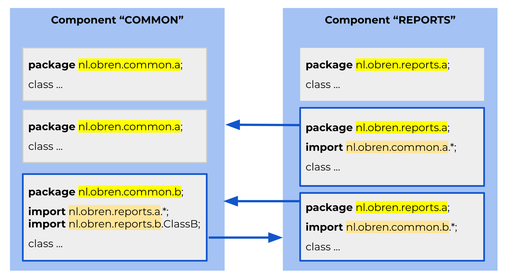
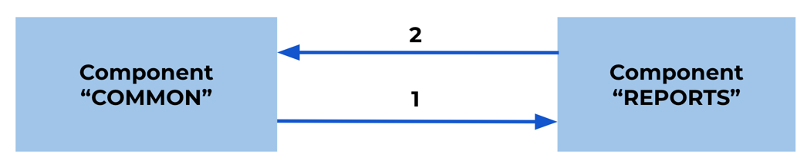
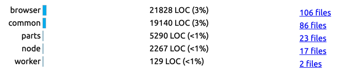
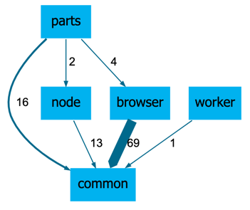
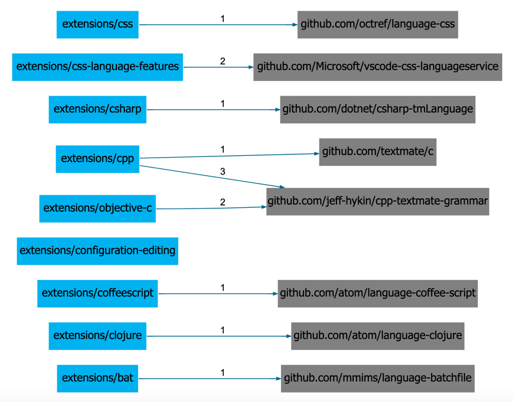

Finding Dependencies based on Text Patterns
“And a thing is not seen because it is visible, but conversely, visible because it is seen” ― Socrates
Sokrates analyses dependencies through simple text patterns searches. Such dependency analyses are not as detailed as the ones provided by specialized software tools.
Sokrates focuses on finding dependencies between components and is not concerned with more detailed insights. There are are two main reasons for this. First, dependencies among the components are, from an architectural standpoint, the most relevant ones. While it may be interesting to know all dependencies between individual files or between units, what I miss the most in practice is the big picture, and Sokrates focuses exclusively on the big picture. Moreover, once when you understand the big picture, you can reliably obtain more detailed dependency data from your IDEs and code editors. Second, by concentrating on finding only the dependencies among components, you can simplify analysis and use simple heuristics with high accuracy.
Sokrates’ pattern-based dependency analysis requires the existence of easily identifiable textual patterns that both, uniquely connect files in a shared component, and are present in places where there is a link, a dependency, to another component. Consequently, if such patterns do not exist if they are not unique or are challenging to find, you may not be able to identify the dependencies reliably.
While limited at the detail level, the pattern-based identification of the dependencies is an extremely flexible and powerful mechanism that I have been using daily for years and with great success. For most languages, such analysis can replicate the level of accuracy that a more advanced and sophisticated static-code analysis tools analysis offer. But, if used wisely and with care, it also has some additional features, going beyond static code analysis tools. Such features include the possibility to identify dependencies entities defined in text constants or comments, such as dependencies to websites, APIs, or database tables, that regular classical static code analysis tools do not cover.
Sokrates uses pattern-based dependency analysis in two places. The first place is the internal built-in dependency finders. Sokrates has several built-in dependency finders for mainstream programming languages so that you can get a basic dependency analysis of these languages for them without any extra configuration. The second place is a manual configuration, where you can define your own dependency finders based on the Sokrates pattern-based mechanisms. If a programming language supports build-in dependency finders you can still use your own custom dependency finders, and switch off the built-in ones.
Dependency Analysis Pragmatics: File to Component Links
Much simpler, technology independent, and robust mechanisms.
Build-in Dependency Finder Heuristics
For several common languages, Sokrates includes the build in pattern based dependency finders. You can use this build-in finders alon, or switch tem off and use your own configured finders. Here, I’ll describe few heuristics used to define patter dependencies in Sokrates build-in dependency finders.
Build-in dependency finders use two types of heuristics:
- namespaces based dependency finders
- path based includes
The following heuristic is used in languages where files are organized in explicitly defined packages, modules or namespaces (e.g. Java, C#, Go, Scala, PHP, Groovy, Kotlin, Perl, Ruby, D):
- Heuristic: the analysis assumes that the names of packages, modules or namespaces are present in source files, and are unique components (e.g. two components do not have files in the same package, module or namespace)
- Limitation: not reliable if the same package, module or namespace is defined in two or more components
- Logic:
- Finding component patterns: looking for package, modules or namespaces definitions, normally at the beginning of the file. Extract full package, module or namespace.
- Find dependencies:
- look for import statement to packages, modules or namespaces
- extract full package, module or namespace name from the import statement
- if the full name in the import statement can be found in package statements on the other component, then add the dependency to that component
Patterns that are likely to be unique for files in a components (e.g. java package heuristic)
 
Figure 1: An overview of the build-in Java pattern-based dependency extractor. Sokrates uses Java package definitions as patterns to connect components.
Custom Dependency Finders: Linking Path Based Componentization to Path-Based Include Statements
With the Sokrates configuration file, you can define your own pattern based dependency finders using the Sokrates String Transformation Language (SSTL). The key to this approach is defining a string transformation that maps a path or content of a file to a name of a component. For instance, lets assume that we have the project with following source code folders:
src/
vs/
base/
browser/
common/
node/
parts/
worker/
Figure 2: An example folder structure taken from the VS Code project.
Let’s also assume that we have componentized this projects based on the folder depth at levelt 3 (src/vs/base/*). This componentization created the following five components:

Figure 3: The fragment of Sokrates reposrt displaying the result of the folder-depth based componentization (level 3) of the source code structure described in Figure 2.
The files in this folder are TypeScript files, and they import other TypesScript file vai import statement that user path based referencing. I have identify the following convention that we can use to connect files from one component to files in another components:
- look for all files with path like “.[.]ts” AND content like “import .from ‘vs/base.*”
- for each file matching the previous criteria, extract, from the mathec content lines, the following regex pattern “base(/[a-zA-Z0-9_]+|)”
- in the extracted string replace “base(/)?” with “” (empty string)
When applied on the files, this leads to the following dependency diagram:

Figure 4: A visualization of measured dependencies.
These are the details of the browser – common dependencies:
from: browser
to: common
evidence:
- file: "src/vs/base/browser/browser.ts"
contains "import { Emitter, Event } from 'vs/base/common/event';"
from: browser
to: common
evidence:
- file: "src/vs/base/browser/canIUse.ts"
contains "import * as platform from 'vs/base/common/platform';"
from: browser
to: common
evidence:
- file: "src/vs/base/browser/contextmenu.ts"
contains "import { IAction, IActionRunner } from 'vs/base/common/actions';"
from: browser
to: common
evidence:
- file: "src/vs/base/browser/dnd.ts"
contains "import { Disposable } from 'vs/base/common/lifecycle';"
from: browser
to: common
evidence:
- file: "src/vs/base/browser/dom.ts"
contains "import { TimeoutTimer } from 'vs/base/common/async';"
...
Figure 5: A fragemnt of a Sokrates’ details file for dependecies from Figure 4. The file lists each dependency, as well as the content due to which Sokrates has decided to create a dependency.
Custom Dependency Finders
You can use a configuration object within the logical decomposition section of the configuration file to define a custom dependency finder. This custom dependency finder section enables you to set a string transformation scripts that takes as an input a path or a line of file content and transforms the input string into a name. If this name matches the name of any component, then Sokraets creates a link between the file and the component. If the name does not match any component names, Sokrates treats the name as the name of an external component. Sokrates displays the names of external components with grey color, to distinguish them from internal components.
Custom Dependency Finders: Linking Namespace Componentization to Namespace Import Statements
Custom Dependency Finders: Identifying External Links
Using Pattern-Based Dependency Finder to Look For Dynamic Links
Grey block as external “components”, any string
The following explicit meta-rules for finding dependencies are defined: content like “.github[.]com/[a-zA-Z0-9-_]+/[a-zA-Z0-9-_]+.” extract (“github[.]com/[a-zA-Z0-9-_]+/[a-zA-Z0-9-_]+”)

Figure 6: A visualization of the measured GitHub project dependencies in the VS Code project. The measurements extract links from VS Code comments.
VS Code Components and Dependecies
from: extensions/html-language-features to: github.com/Microsoft/vscode-html-languageservice evidence: - file: "extensions/html-language-features/package.nls.json" contains " "html.customData.desc": "A list of relative file paths pointing to JSON files following the [custom data format](https://github.com/Microsoft/vscode-html-languageservice/blob/master/docs/customData.md).\n\nVS Code loads custom data on startup to enhance its HTML support for the custom HTML tags, attributes and attribute values you specify in the JSON files.\n\nThe file paths are relative to workspace and only workspace folder settings are considered."," from: extensions/html-language-features to: github.com/Microsoft/vscode-html-languageservice evidence: - file: "extensions/html-language-features/schemas/package.schema.json" contains " "markdownDescription": "A list of relative file paths pointing to JSON files following the [custom data format](https://github.com/Microsoft/vscode-html-languageservice/blob/master/docs/customData.md).\n\nVS Code loads custom data on startup to enhance its HTML support for the custom HTML tags, attributes and attribute values you specify in the JSON files.\n\nThe file paths are relative to workspace and only workspace folder settings are considered.","
Figure 7: A fragment of a Sokrates’ details file for dependencies from Figure 6. The file lists each dependency, as well as the content due to which Sokrates has decided to create a dependency.